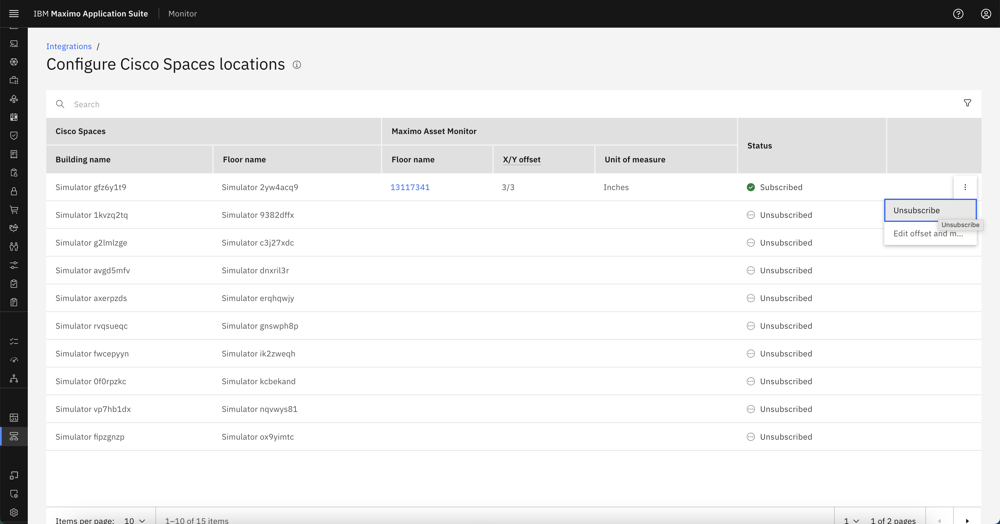
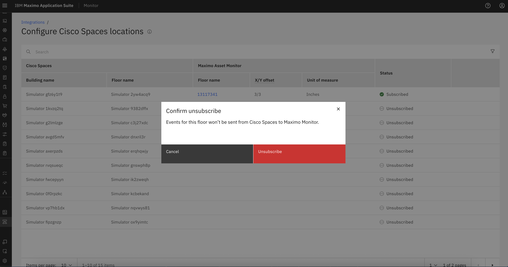
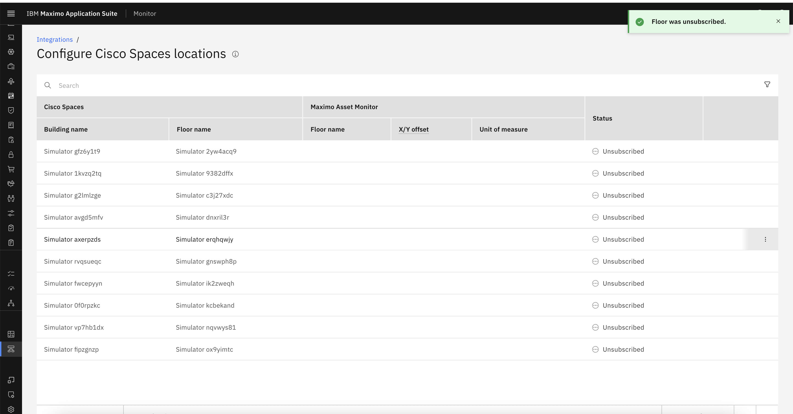

Unsubscribe Cisco Spaces Location
In some cases, you may want to stop receiving events from a Cisco Spaces location . This can be useful if a floor is being decommissioned, reconfigured, or no longer needs to be monitored.
This guide explains how to unsubscribe a specific Cisco Spaces location.
Unsubscribe a location
- Stop incoming events from Cisco Spaces for that floor.
- Disable any further updates or visualizations related to that location in MAS Monitor.
Steps to Unsubscribe a Cisco Spaces Location
-
Navigate to the Integration Configuration
- Go to Setup → Integrations from the MAS Monitor left navigation menu.
- Select the Cisco Spaces integration from the list.
-
Locate the Subscribed Location
- Find the specific floor/location that you want to unsubscribe from the integration list.
-
Open the Actions Menu
- Click on the ellipsis (⋮) button at the right corner of the location row.
- This will open the actions dropdown menu.

-
Select "Unsubscribe"
- Choose the Unsubscribe option from the list.
-
A confirmation popup will appear with the message:
Events for this floor won’t be sent from Cisco Spaces to Maximo Monitor.

-
Confirm Unsubscribe
- Click the Unsubscribe button in the popup.
- The floor will now be marked as unsubscribed, and Cisco Spaces will stop sending any new data for it.

Summary
After unsubscribing:
- The floor’s subscription status will be updated to
Unsubscribed. - No new user movement, occupancy, or location metrics will be fetched from Cisco Spaces.
- You can re-subscribe the location again later if needed using the same process.